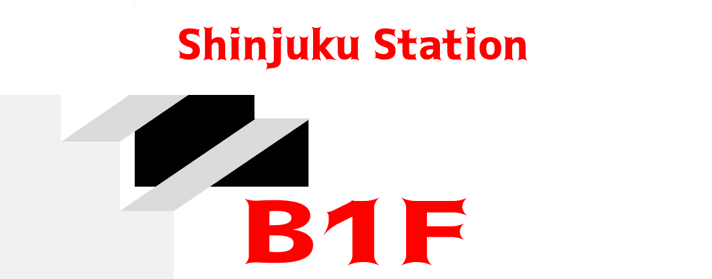

B1F

이번엔 1층으로 내려가보자.
호텔 체크인과 쇼핑 및 여러가지 유흥거리를 원한다면 1층으로 내려가야 한다. 지하 1층에는 크게 서쪽 출구와 동쪽 출구가 있다. 호텔을 신주쿠 쪽에 예약했다면 호텔들이 밀집되어있는 서쪽 출구 쪽으로 나가자. 서쪽출구의 역빌딩은 오다큐 백화점과 게이오 백화점이 있다. A10 ~ A15 출구를 이용하면 JR 서쪽 출구 개찰구 방면이나 오다큐 백화점으로 갈 수 있고, B16,18 출구를 이용하면 오다큐 HALC 방면으로 갈 수 있다.
동쪽 출구는 신주쿠의 쇼핑가, 음식점이나 유흥가가 밀집한 곳이다.
우리가 찾는 빔즈, 돈키호테, 가부키초,
크게 버스터미널, 남쪽출구와 남동쪽 출구로 구분할 수 있다.